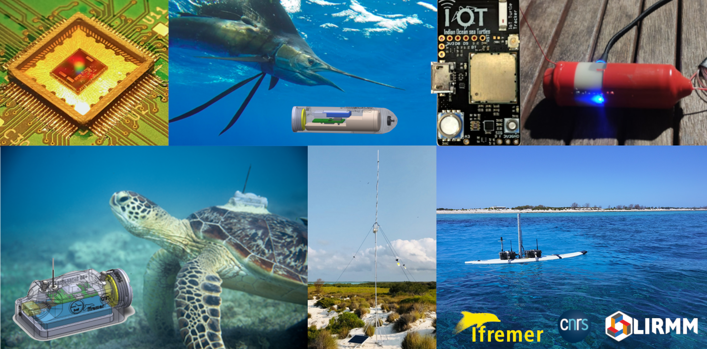

Official GitHub Repositories
This page provides access to the official Git repositories for work that have been published or referenced in scientific papers.

Categories
- Software for loggers based on the IOT board
- Software for loggers based on the FISHNCHIP board
- CAD files for electronic boards
- CAD files for 3D-printed casings
- LoRa networks
- Dataset
- Data visualisation
- Documentation
Software for loggers based on the IOT board
LoRa logger for sea turtle tracking (version without GPS)
A LoRaWAN logger dedicated to sea turtle tracking that transmits real-time data of temperature, surface events and dive profile using the LoRa/LoRaWAN technology. This device has been used within the IOT project for experimentations in Europa, Mayotte, Aldabra and Reunion (2021-2022).
https://gitlab.ifremer.fr/sb2-team/iot-tag
LoRa logger for sea turtle tracking (version with GPS)
(On going ...)
LoRa logger for DCP monitoring
A LoRaWAN logger dedicated to real-time DCP monitoring. This device has been used for experimentation with the CRPMEM in the Reunion Island (2024).
https://gitlab.ifremer.fr/sb2-team/dcp-iotboard-logger
LoRa logger to monitor fishes survival rates (TAAF version)
A LoRaWAN logger dedicated to monitor survival rates of marine animals after capture and release. The device records underwater temperature and pressure data, then pops after a predifined date and sends the measurement throuhg LoRa while at surface. This device has been used with the TAAF for experiments on sleeper sharks (2024).
https://gitlab.ifremer.fr/sb2-team/urelease-logger-taaf
Multi-sensor general purpose logger
A general purpose logger with no RF communication that read the accelero, the magneto, the temperature, pressure sensors and store the results in the embeded flash memory with compression technique. The configuration is onne through a console user interface, flash dump and quick plots automatized with Python scripts. This device has been used within the TALE project for experimentation on the ship OSIRIS II (2022).
https://gitlab.ifremer.fr/sb2-team/iotboard-allinone-logger
Software for loggers based on the FISHNCHIP board
Multi-sensor GPS LoRa Logger
A LoRaWAN GNSS logger based on the FISHNCHIP board that periodically sends GPS position and environmental measurements (pressure, temperature). The device is configured through a console user interface. This device has been used within the LoRaShip project (2023-2024).
https://gitlab.ifremer.fr/sb2-team/loraship-fnc-gnss-logger
CAD files for electronic boards
IOT board
(on going...)
FISHNCHIP board (v1)
(on going...)
FISHNCHIP board (v2)
(on going...)
CAD files for 3D-printed casings
Casing for sea turtle tags
(on going...)
Casing for uRlease tags
(on going...)
LoRa networks
Dataflux agent
Lightweight Python agent called Dataflux, which establishes a continuous connection between LoRa servers (TTN, Chirpstack, Orange) and a database (InfluxDB v2) using the MQTT protocol.
https://gitlab.ifremer.fr/sb2-team/dataflux-agent
Private LoRa server with Chirpstack
Sources and executables for a private LoRa network dedicated to natural and remote sites with very limited internet acces. This custom network is composed of a meshed network of secondary gateways that have no internet, a main gateway connected to the internet via satelite and a distant server that emulate a classical LoRa network and bridges with a Chirpstack LoRa server.
https://gitlab.ifremer.fr/sb2-team/iot-gateway-layer-chirpstack
LoRaShip simulator
Python scripts for the simulation and analysis of LoRa network performances in coastal and off-shore marine scenario.
https://gitlab.ifremer.fr/sb2-team/loraship-simulator
"Toolbox" project : https://gitlab.ifremer.fr/sb2-team/loraship-toolbox
Dataset
A bio-logging dataset on the diving behaviours of juvenile sea turtles from the southwestern Indian Ocean
Python scripts to access, process and analyze data produced within the Indian Ocean sea Turtles project (IOT, 2018-2021, Ifremer/CNRS)
https://gitlab.ifremer.fr/mj31fbe/iot-data-processing-meepaper2024
A dataset of geolocalized LoRa message in marine conditions
(... on going ...)
Data visualisation
LoRa loggers online-portal
(... on going ...)
Dashboard with Python / Dash framework
Interactive dashboard with Python / Dash framework to visualize logger data (... to be updated ...)
Documentation
LoRaWAN sensors for wildlife monitoring in off-shore and coastal marine scenario
This documentation brings together a range of work on LoRa connectivity in the marine environment, dedicated to the observation of marine fauna, ecosystems and fisheries.
https://gitlab.ifremer.fr/sb2-team/lora-sensors-in-marine-scenario-mkdocs
GitHub Organization Guidelines (this documentation)
This documentation provides guidelines for contributing to this GitHub organization.
https://gitlab.ifremer.fr/mj31fbe/github-organization-guidelines-mkdocs